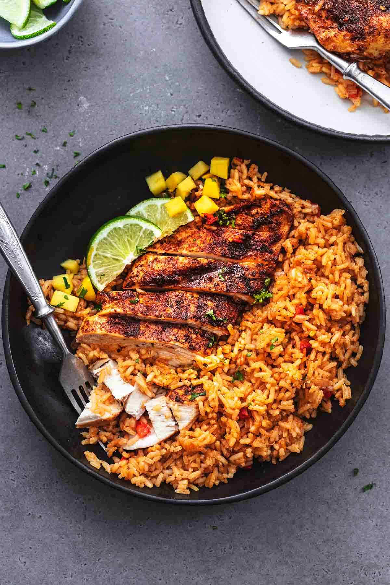

Chiptole Chicken Meal Prep

Description
A tasty meal prep Chiptole chicken recipe
that goes with rice and lasts a week in the fridge
Per 80g - 20g Protein, 200 Cal
Ingredients
- Boneless Skinless Chicken Thighs
- Olive Oil
- Salt, Garlic Powder, Onion Powder, Smoked Paprika, Chili Powder
- Optional - Cumin, Cayenne, Black pepper
Steps
- Wash Chicken
- Season Chicken with all seasoning on
both sides
- KEY TIP: season chicken on both sides till you sneeze!
If you want flavour go crazy!!
- Drizzle Olive Oil on each Thigh
- Smother and mix chicken thighs individually with hands, until sore :D
- Place Chicken on stove top pan on medium heat
- Flip chicken after 3-5 mins
- after 10 mins and a nice black crust has formed,
check if cooked by taking a fork and splitting a piece in half,
it should be juicy and white!